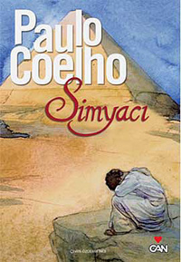

SİMYACI
Paulo Coelho’nun dünya klasikleri arasında yer alan romanı Simyacı dünyanın en çok satan romanlarından bir tanesi olmasının yanında en fazla okunması tavsiye edilen romanlarında başında geliyor. Mükemmel felsefik masalımsı hikayesi ile okurlarını kendine bağlayan Simyacı verdiği mükemmel mesajlar ile de kişisel gelişim açısından tam bir başucu romanı.Kitapta bir çoban olan Santiago’nun hikayesi anlatılıyor. Gezmeyi seven ve bu yüzden çoban olmayı tercih eden ve bununla gurur duyan Santiago ardı ardına Mısır Piramitlerinde kendisini bekleyen bir hazine olduğuna dair bir rüya görür. Bunun üzerine bir falcı çingeneden rüyasını yorumlamasını ister. Çingene de ona Mısır’a gidip hazineyi bulmasını söyler. İlk başta saçma bulsa da daha sonra karşısına çıkan ve Kral olduğunu iddia eden yaşlı adam da ona aynı şeyi söyler. Bunun üzerine koyunlarını satıp Mısır’ın yolunu tutar.
Afrika kıtasında daha ilk durağında bir hırsız ile karşılaşır ve tüm parasını çaldırır. Bunun üzerine hayalinden vazgeçmek üzeredir. Fakat geri dönecek parası da yoktur ve bunun üzerine Kristal satan bir tüccarın yanında işe başlar. Zekası sayesinde satışları arttıran çoban geri dönmesi için gerekli olan parayı bir senede toplar. Tam geri dönmeye hazırlanırken bu kez ingiliz bir gezgin ile tanışır. İngiliz Mısır yakınlarındaki bir kasabada yaşayan 200 yaşında olduğu iddia edilen bir Simyacı’yı bulmak için yola çıkmaya hazırlanır. Bunun üzerine çoban da onunla birlikte hayallerinin peşinden gitmeye karar verir.
Kuzey Afrika’da bir savaş vardır ve yol çok tehlikelidir. Fakat kervan sonunda Simyacı’nın bulunduğu kasabaya varır. Fakat savaş nedeni ile Piramitlere gitmek pek mümkün görünmemektedir. Çoban burada bir kıza aşık olur ve aradığı hazinenin o olduğunu sanır ve ona evlenme teklif eder. Fakat bir gün Simyacı ile tanışır ve Simyacı düşüncesinin yanlış olduğunu belirtir ve Piramitleri bulmak zorunda olduğu söyler. Bunun üzerine birlikte Piramitlere doğru yola çıkarlar. Simyacı ile yaptığı yolculuk boyunca ruhunun derinleri ile konuşmayı öğrenen çoban sonunda Piramitlere ulaşır. Ulaştığında ise hazinenin yerini anlar ve bu onun yüzünde bir gülümseme oluşturur.
Simyacı kitabının sonunu yazmıyorum çünkü okuyarak kendinizin öğrenmesini tavsiye ederim. Fakat verdiği mesaj ile aslında sonunu tahmin edebilirsiniz. Her insan hayallerini ve mutluluğu uzaklarda arar fakat aslında onlar hep yanı başımızdadır. Bu mesaj dışında daha bir çok güzel mesaj var kitapta. Yılmadan hayallerin peşinden gidilmesi gerektiği gibi.